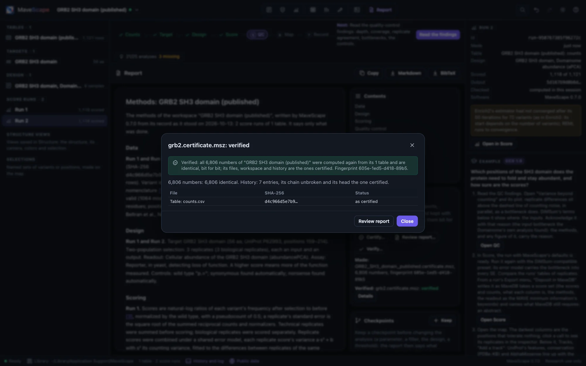
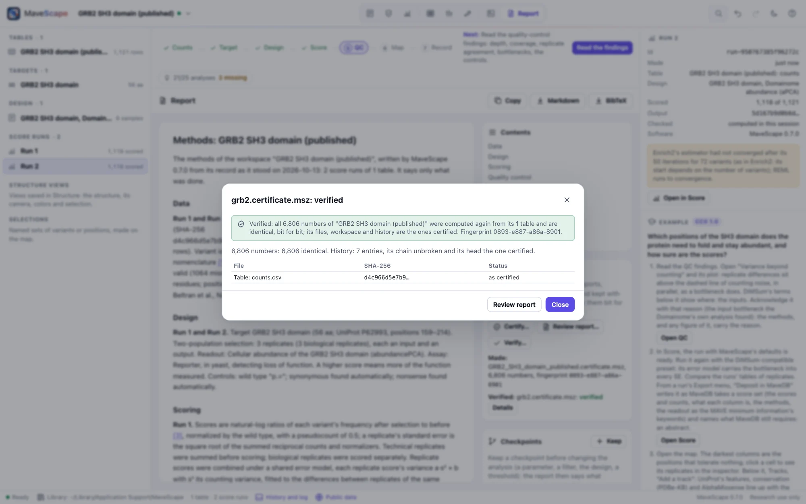
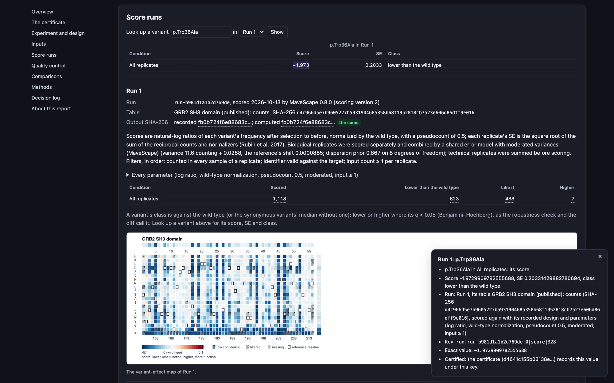
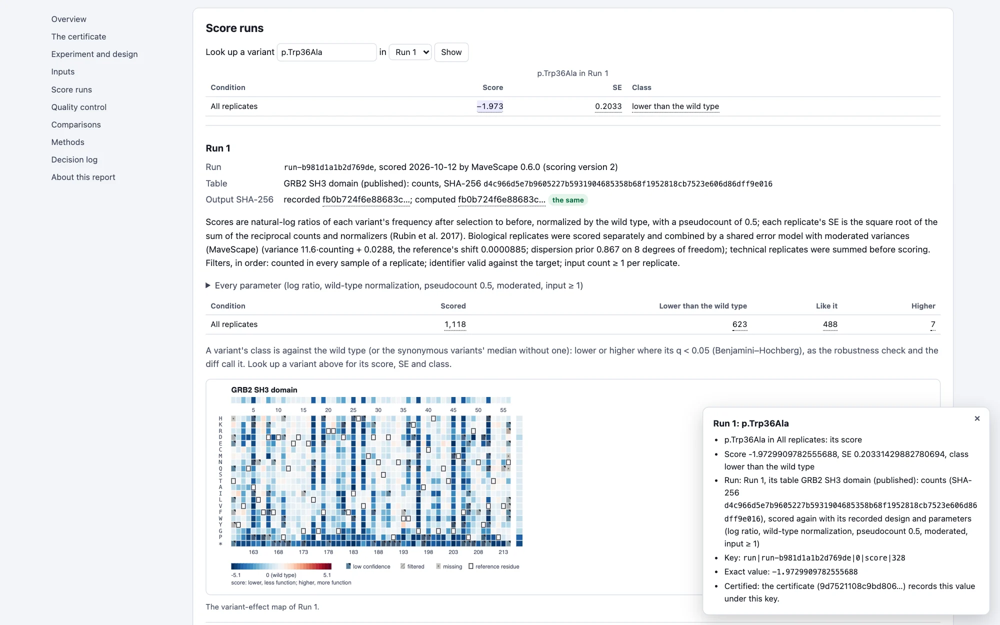

Certificates and review reports
A certificate lets anyone check that the analysis gives the numbers it reports. It holds the workspace, the files it read and every number, and verifying computes each number again from the files and compares them bit for bit.
What a certificate is
A certificate (.certificate.msz) is a workspace archive with two more files. certificate.json records every number the workspace reports, each computed again from its files when the certificate was made:
- each run's scores, standard errors and classes (lower than, like or higher than the wild type, as the robustness check calls them), and each difference between conditions;
- each run's QC findings, with what each found and its acknowledgement, and a SHA-256 of every number its QC computed;
- each comparison and robustness check kept in the report, computed again;
- each figure panel's drawing, by its SHA-256, as the figure's manifest records it;
- the report and its references.
certificate.json also names the workspace, every file it reads, the history's last hash and the checkpoints by their SHA-256. README.txt says what the certificate proves and how to verify it.
Its fingerprint is the SHA-256 of everything certificate.json records, so it names exactly what was certified. Quote it with the analysis, in a paper or a data deposit. Its short form is its first 16 characters, xxxx-xxxx-xxxx-xxxx.
A certificate has no time of its own. The same workspace, files and MaveScape always give the same bytes, and so the same fingerprint, whenever and wherever it is made.
Making one
In the Report view's Certificate pane, Certify… computes every number again from the files in the library and writes the certificate. It runs in a worker, so the window stays responsive. Scripts use certify (Remote control).
The count tables are included unless you uncheck them. For data that cannot be shared, leave them out: each table is then named by its SHA-256 only, and whoever verifies the certificate gives the tables beside it. Annotation files and figure images always go in. Structure files go in when the library holds them all.
Leaving them out also suits tables that are public already. BRCA1 RING's example is opened from MaveDB, and its certificate made without its tables names them by the SHA-256 of MaveDB's own files: a reviewer downloads the two from the record and verifies it with them (Examples).
If making a certificate finds that a run's scores computed now are not the ones recorded when it was scored, or that an analysis kept in the report no longer computes the same, it records the numbers the files give now and says so in its notes.
Verifying one


Verifying a certificate:
- checks its fingerprint;
- checks the workspace and every file against their SHA-256;
- checks the history's chain and last hash, each checkpoint's state, and each run's id (which follows from the run's recorded inputs);
- computes every number again from the files, with this MaveScape's code, and compares them bit for bit.
MaveScape's numbers do not depend on the browser or on Node, so equality is exact.
mavescape verify analysis.certificate.msz
mavescape verify --data tables/ analysis.certificate.msz # made without its tables
mavescape verify --report verification.json analysis.certificate.mszThe exit status gives the verdict:
- 0, verified: every number is identical.
- 1, differs: each difference is listed with the number it concerns (Run 1: the score of p.Trp36Ala: −0.8123… certified, −0.8124… now).
- 2, not checkable: a file the certificate names is missing. The numbers read from it are not computed, rather than said to differ. A wrong command line also exits 2.
In the window:
- Verify… in the Certificate pane takes a certificate, and the tables it names if it was made without them.
- A certificate opened as a workspace offers to verify itself.
- The library's files are found by their SHA-256.
Another version of MaveScape can verify a certificate too, and says which version certified it and which verified it.
The review report


The review report (.review.html) shows a certificate's numbers in one file a reviewer, a collaborator or a PI opens in any browser, without MaveScape. It holds:
- the certificate's fingerprint, with what it proves and does not, and how to verify it;
- the experiment and design, and the inputs with their checksums;
- each run's parameters, its variants by class and its maps;
- the QC findings with their plots and acknowledgements;
- the comparisons and robustness checks kept in the report;
- the selections, structure views and figures;
- the methods with their references, and the decision log.
Every number is traced. Click it, or press Enter on it, and the report says where it comes from: the run, its table and that table's SHA-256 for a score; the threshold for a QC finding; the two sides for a comparison; what a figure panel shows and was drawn from. It also gives the number's key and its exact value, the certificate's own.
Look up a variant gives its score, SE and class in each condition. Check this file's numbers against the fingerprint computes, in the browser, the SHA-256 of the certificate the file holds and compares it with the fingerprint.
The file loads nothing: its styles, script, maps, plots and figures are inside it, and its only links, DOIs, are followed when clicked. To make one:
- Review report… in the Certificate pane;
- remote control's
review_report; mavescape export --format review;- from a certificate you received,
mavescape verify --review review.html, or Review report in the verification's dialog.
For the same workspace and MaveScape, each gives the same file, naming the fingerprint of the certificate Certify writes.
What it proves, and what it does not
A verified certificate shows that these inputs, analyzed as the workspace records, give these numbers: the analysis is reproducible. It also shows that the record is the one certified. Whoever changed a file would have to make the certificate again, and it would then have another fingerprint than the one quoted.
It does not show that the scores are right. That rests on the experiment's design and the model's assumptions, which the report states, and on the QC findings, which the certificate records with their acknowledgements.
Some things are recorded but not computed again, and the certificate lists each:
- a selection's variants are kept as they were chosen;
- a structure view's evidence is not computed again (its structure's file is checked by its SHA-256);
- a map panel that shows the structure's tracks is certified without them, since they need the structure open.
How certificates are checked
The validation suite's certificate starts from GRB2's workspace of every operation: two runs, a threshold changed, a finding acknowledged, a selection, a comparison and a robustness check kept in the report, an annotation, a structure view, a checkpoint, and a figure with every kind of panel. Each kind of number in its certificate is what is computed apart from the certificate:
- the scores, SEs and classes;
- the QC and its findings;
- the comparison and the robustness check as the report keeps them;
- each panel drawn from the numbers computed apart;
- the report.
It is then verified bit for bit, and made again it is the same bytes. Then:
- Six kinds of tampering are each caught and said, even with the archive's manifest made to list the change:
- a count changed in the table;
- a score changed in its last bit, with and without the fingerprint made again;
- a run's pseudocount edited, a history entry's words edited, and a checkpoint's state edited, each with
certificate.jsonmade to agree.
- A certificate without its tables is not checkable, naming the table, and verified with it given beside.
- Each of the 18 examples is certified and verified (224,792 numbers), as is each earlier release's workspace archive, from 0.1 to 0.8 (those saved with an AI agent's proposal open are refused until it is accepted).
- The certificates made by MaveScape 0.6.0, 0.7.0 and 0.8.0 themselves are kept (0.8.0's of format 2, with calibrations), and every later version verifies them.
In the window, through remote control:
- The window certifies a workspace with three runs, annotations, a robustness check kept in the report and two figures with every kind of panel. Node verifies it, and it is the same bytes as Node certifies from the workspace's archive.
- Every figure panel's drawing is the one its manifest records.
- Node's certificate is verified in the window. A tampered one is not verified, and the number that differs is the one Node finds.
mavescape verifyexits 0, 1 and 2 as above.
The review report (the validation suite's review):
- For GRB2's workspace of every operation and each of the 18 examples, every traced number is checked against where it says it comes from: the certificate's value under its key, the workspace's at its path, or a count of the certificate's classes.
- The file loads nothing, and the check catches an image, a stylesheet and a request planted in it.
- Made again it is the same bytes, and the review made from the certificate verified is its maker's. A certificate that does not verify gives none.
In the window:
- The review report is the same bytes as Node's.
- Opened from its file in the browser, it requests nothing but itself and has no axe-core violation (WCAG 2.1 A and AA) in the light theme or the dark.
- A clicked number says where it comes from, a variant looks up, and the fingerprint checks.
mavescape verify --reviewandmavescape export --format revieweach write Node's bytes.